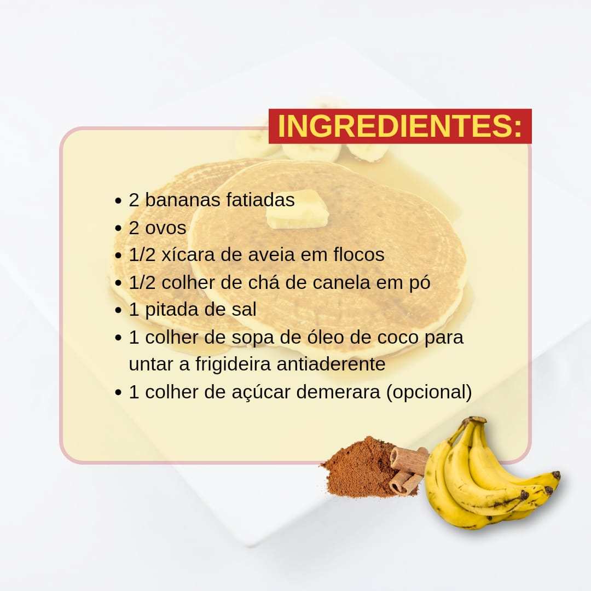
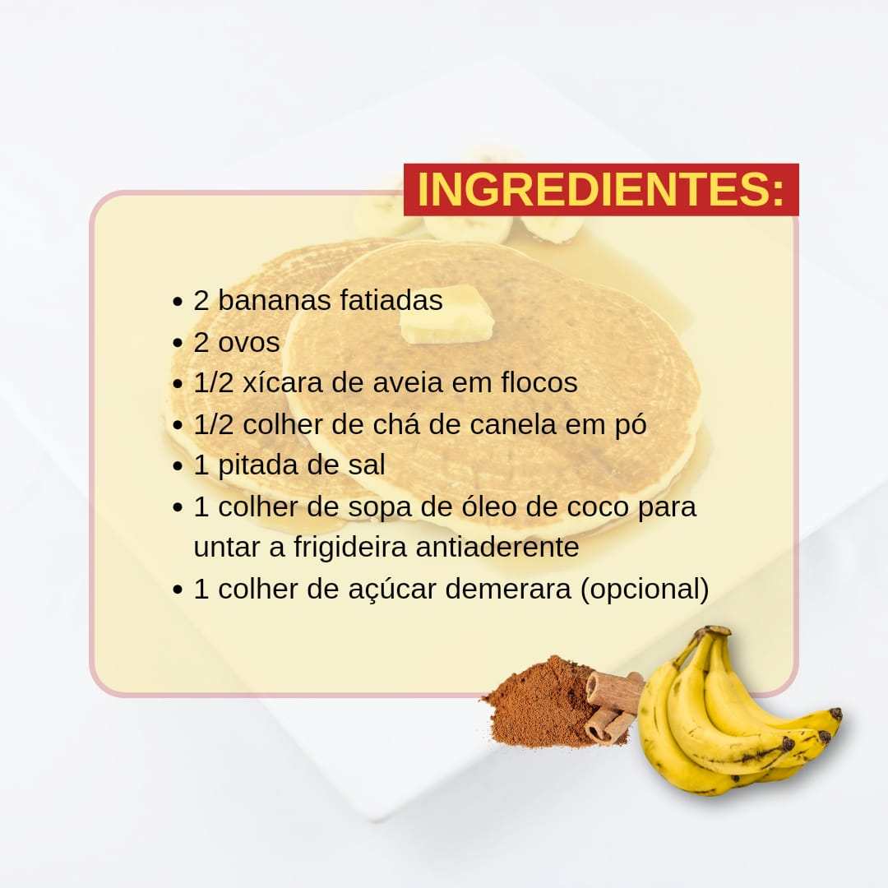

Panqueca de Banana
Ingredientes:
1 banana madura
2 ovos
1/2 xícara de aveia em flocos (opcional, para textura)
1 colher de chá de canela em pó (opcional)
Uma pitada de sal
Óleo ou manteiga para untar a frigideira
Instruções:
Prepare a Mistura:
Em uma tigela, amasse bem a banana com um garfo até formar um purê.
Adicione os ovos e misture até ficar homogêneo.
Se desejar, acrescente a aveia, a canela e o sal e misture bem.
Aqueça a Frigideira:
Aqueça uma frigideira antiaderente em fogo médio e unte com um pouco de óleo ou manteiga.
Cozinhe as Panquecas:
Coloque 1/4 de xícara da mistura na frigideira quente.
Cozinhe por 2-3 minutos ou até que bolhas comecem a se formar na superfície.
Vire a panqueca e cozinhe por mais 1-2 minutos até dourar do outro lado.
Sirva:
Repita o processo com o restante da massa.
Sirva as panquecas quentes, acompanhadas de frutas frescas, mel ou xarope de bordo, se desejar.
Dicas:
Para variar, você pode adicionar ingredientes como nozes, chocolate amargo picado ou frutas secas à massa.
Esta receita é ótima para um café da manhã nutritivo ou um lanche!
Aproveite suas panquecas de banana, que são deliciosas, saudáveis e fáceis de fazer!
Blog da Sarah Rosner
 
